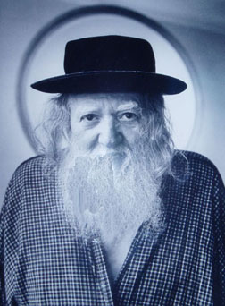

NEW YORK PRESS
THE RABBI'S BASEMENT TAPES
“My grandfather is stirring,” Lionel Ziprin says, worried. His grandfather died in 1955. He’s buried in Israel. What’s making him restless over there? Maybe the sudden fame of his old friend, the late Harry Smith. Smith’s landmark Anthology of American Folk Music, originally released as six LPs in 1952, was reissued on CD this past August to universal acclaim. Articles everywhere, a whole book (Greil Marcus’ Invisible Republic) positioning it as the inspiration for Dylan and everything that happens in American pop music after him.
Ziprin’s grandfather must be wondering whatever happened to the records he made with Harry Smith. No fewer than 15 LP’s and untold hours more on tape, of nothing more than Ziprin’s granddad, recorded in his bedroom on the Lower East Side, singing and telling stories.
Ziprin lives on E. Broadway, way over on the Lowest East Side, where he was born. Now more Chinese and Latino than the de facto Jewish ghetto was when he grew up.
(There’s a big Iglesia Christiana Primitiva right cross the street, just like a jest of history.) A small man affecting a rabbi’s white beard and dark clothes, his hair tucked up in a variety of hats (today it’s a NASA cap), chain-smoking Tareyton 100s, pacing a living room crowded with old bits of furniture, books, a couple of chests filled with old papers. His speech has the pure corned-beef cadences of the old Jewish LES. As I’ve written before, Ziprin’s one of the undersung linchpins of New York hipster history. Beatniks, hippies, jazzmen, poets, painters, rockers, mystics, magicians and the slumming zillionaires who support them all — everybody knows Lionel.
Poet, Scholar (born some time in the 1920s) Domicile: New York City
Lionel personifies the old-fashioned Lower East Side where he was born and
raised by his grandmother and grandfather, an eminent rabbi. He grew up
endowed with an ability to see into alternative realms. After WWII his
literary career looked promising. Ezra Pound read one of his poems in a
magazine and initiated a correspondence. Lionel married and had children.
For years he took care of his mother, Sheba, until her passing. Lionel is
very devout. He is currently completing a book to go with recordings (made
by Harry Smith) of his grandfather singing; songs which would otherwise be
lost forever.
The New York Times
by William Grimes
March 20, 2009
LIONEL ZIPRIN , Mystic of the Lower East Side, Dies at 84